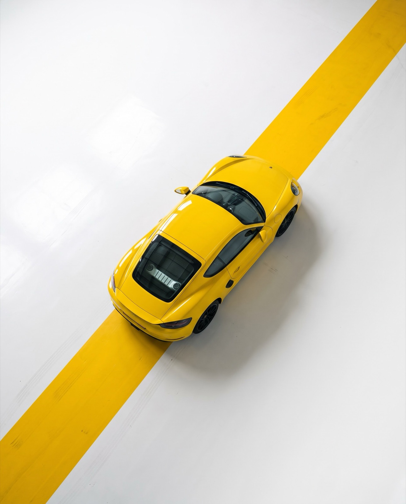

Kat Impey
- Coaching high-performance drivers since 2004
- Factory-approved by McLaren, Mercedes and Subaru
- Raced from professional karting to Formula Three
Racing drivers Kat Impey and Richard Bott help you choose the direction first: for your driving, a racing career, or the cars you own.

Long-term thinking, not short-term fixes. Three services, each starting with the same question.

Understand what the car is doing. Understand what you are doing to it. Coaching on the road, on track and at UTAC Millbrook.

For racing drivers and their families, including parents new to motorsport. Career and pathway strategy, and the decisions that come with it.

Personal. Discreet. Independent. One experienced point of contact for sourcing, managing and advising on your cars, free of dealer or broker commissions.

“Working with them is one of the best decisions we’ve made.”Becky and Simon C, parents of a 15-year-old driver taken from karting to his racing licence in 12 months
Your driving, a racing career or your cars. Start with an email to Kat and Richard.
enquiries@velocedriving.com